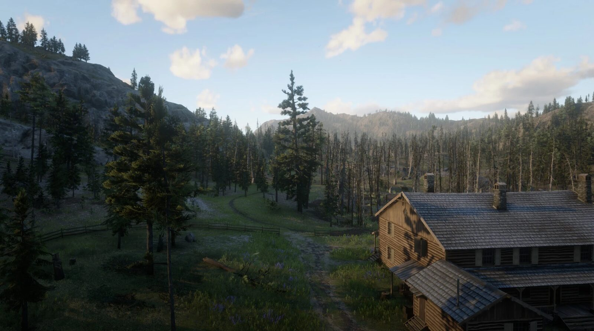
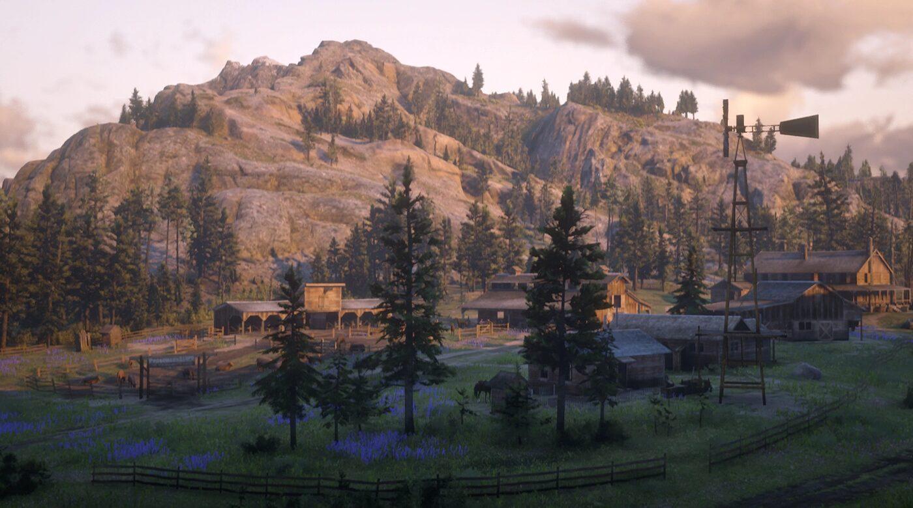

Story guide · Red Dead Redemption 2 Epilogue Part 1: Pronghorn Ranch Red Dead Redemption 2 Epilogue Part 1 of 2 Pronghorn Ranch 1907 By Joseph Lambert · Updated July 24, 2026  Pronghorn Ranch in Big Valley, where John Marston works under a false name. The epilogue of Red Dead Redemption 2 is set in 1907, eight years after Chapter 6. Arthur Morgan is dead. The player now controls John Marston. Part 1 covers the family's move to Big Valley and John's work at Pronghorn Ranch, and it ends with the purchase of Beecher's Hope. Full spoilers for the Red Dead Redemption 2 epilogue follow. Setting: Big Valley and a new name John, Abigail and Jack live near Strawberry, in Big Valley, in the state of West Elizabeth. John takes work at Pronghorn Ranch under the alias Jim Milton. Abigail cleans the surgery of the Strawberry doctor. The ranch is owned by David Geddes, and its foreman is Tom Dickens.  Pronghorn Ranch, where John works as a hand for David Geddes. The missions of Part 1 Part 1 has eleven story missions, with the character who gives each one. The epilogue can be played in several orders, so this is one valid sequence rather than the only one. The Wheel · John Marston Simple Pleasures · Tom Dickens Farming, For Beginners · Tom Dickens Fatherhood, For Beginners · David Geddes Old Habits · John Marston Fatherhood, For Idiots · Abigail Roberts Jim Milton Rides, Again? · David Geddes Motherhood · Abe Gainful Employment · Sadie Adler The Landowning Classes · Ansel Atherton Home of the Gentry? · Ansel Atherton Ranch work and family The early missions are ranch labour and family life: John delivers supplies and recovers a stolen wagon from the Laramie Gang in The Wheel, herds and works the land for Tom Dickens, and spends time with Jack. In Jim Milton Rides, Again? he defends ranch business at Hanging Dog Ranch. The tone is deliberately quiet after Chapter 6. Sadie returns In Gainful Employment, Sadie Adler reappears and brings John into bounty work. This opens bounties in Blackwater, Strawberry, Saint Denis and Tumbleweed. Tumbleweed is in New Austin, the western territory that Arthur could never enter; John can travel there freely in the epilogue. Buying Beecher's Hope The last two missions turn to land. John meets Ansel Atherton, a banker in Blackwater. In Home of the Gentry?, John takes out a bank loan to buy the Beecher's Hope ranch, with David Geddes vouching for him. The loan terms favour the bank. John then clears three squatters from the land, either paying them ten dollars to leave or killing them, and signs for the property. Uncle joins the family to help work it. Key events of Part 1 The epilogue begins in 1907, eight years after Chapter 6, with John Marston as the playable character. John, Abigail and Jack settle near Strawberry; John works Pronghorn Ranch as "Jim Milton". John does ranch work for owner David Geddes and foreman Tom Dickens. Sadie Adler returns and brings John into bounty hunting. New Austin becomes reachable, including Tumbleweed. John takes a bank loan from Ansel Atherton and buys Beecher's Hope; Uncle joins the family. PreviousChapter 6: Beaver Hollow NextEpilogue II: Beecher's Hope